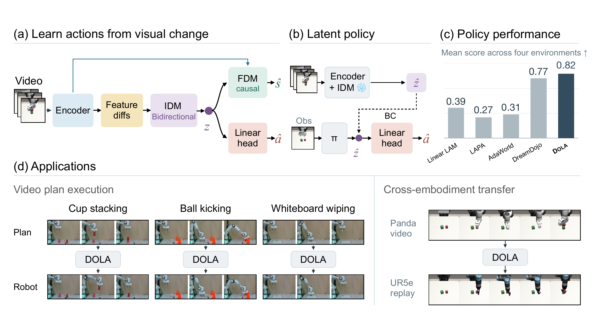
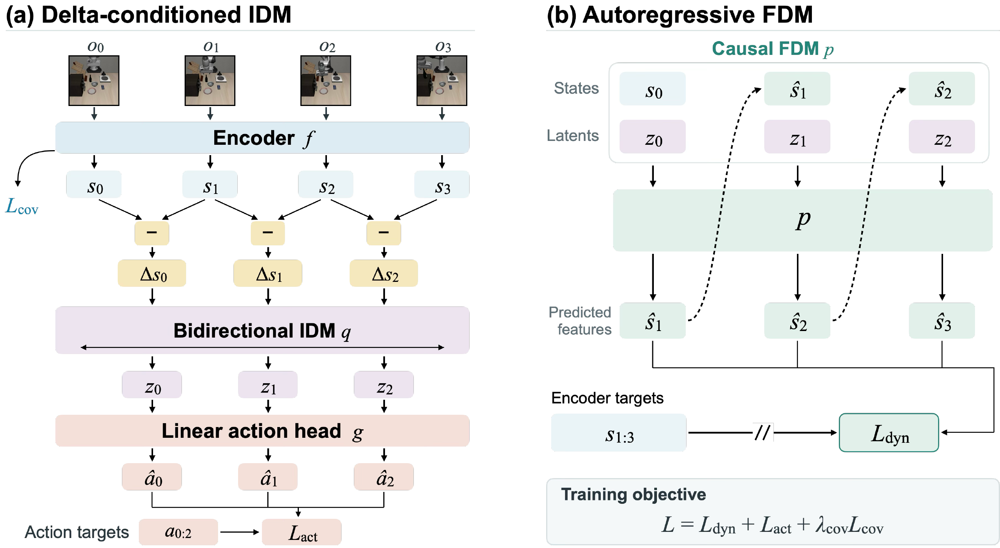
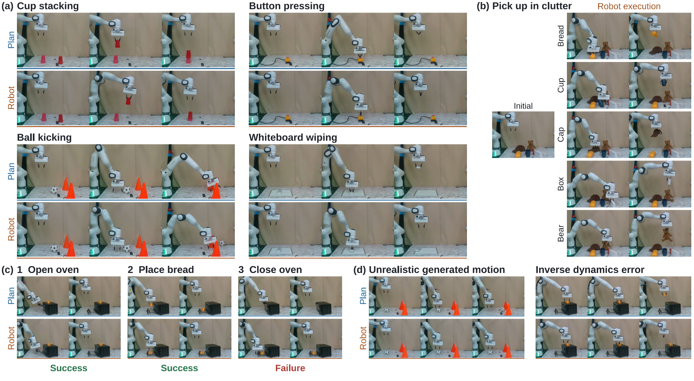

Latent action models aim to learn action representations from video, enabling visuomotor learning beyond action-labeled demonstrations. Since actions cause state changes, their representations should reflect the visual changes they produce. We present DOLA (Delta-Observation Latent Actions), which builds this prior into a jointly learned visual encoder and inverse dynamics model: latent actions are constructed from differences between consecutive observation embeddings, with autoregressive forward prediction and action grounding shaping the representation. We evaluate latent action models as action representation learners using two standard measures: linear probing of frozen representations and downstream task performance of policies trained in latent action space. Across four simulated benchmarks, DOLA achieves the lowest linear probe error and strong downstream policy performance, using less than 7% of the parameters of the strongest baseline. Trained on unpaired demonstrations from two robot embodiments, DOLA learns shared action structure that supports cross-embodiment open-loop trajectory transfer. On a real Franka arm, a single model trained on random task-agnostic calibration data enables zero-shot execution of generated video plans across diverse manipulation tasks, including language-conditioned object pickup in clutter.
DOLA builds on a simple principle: an action representation should capture the visual change an action produces. A jointly learned visual encoder maps each observation to an embedding, \(s_t = f(o_t)\). We form consecutive embedding differences, \(\Delta s_t = s_{t+1} - s_t\), and pass a window of these differences to a bidirectional transformer inverse dynamics model: \(z_{t:t+h-1} = q(\Delta s_{t:t+h-1})\). This constrains the latent actions to depend on visual change while allowing the model to use temporal context across the window. At inference, predictions from overlapping windows are averaged for each time step.
A causal transformer forward dynamics model starts from the first embedding and uses the latent action sequence to predict the next \(h\) embeddings autoregressively. Training minimizes the mean squared error between predicted embeddings and encoder targets with stopped gradients. This multi-step prediction objective provides temporal supervision in embedding space; covariance regularization is applied to the encoder features. We use a prediction horizon of \(h = 8\) by default.
Visual change can also reflect object dynamics, camera motion, or other agents, so observation-only training does not guarantee alignment with the agent's actions. When ground-truth action labels are available, a linear action head maps latent actions to executable actions and provides an additional mean squared error loss. All four components are trained jointly with \(\mathcal{L} = \mathcal{L}_{\mathrm{dyn}} + \mathcal{L}_{\mathrm{act}} + \lambda_{\mathrm{cov}}\mathcal{L}_{\mathrm{cov}}\), where \(\lambda_{\mathrm{cov}} = 0.01\) and the action loss is zero when labels are unavailable.

Open-loop
We evaluate DOLA on zero-shot execution of generated video plans using a real Franka arm. Given an initial scene image and a text description of the desired task, an off-the-shelf video generator produces a visual motion plan, which is then executed open-loop using DOLA as the inverse dynamics model.
The robot is trained using only 75 minutes of task-agnostic calibration data consisting of random end-effector motions, without any demonstrations of the downstream tasks or target objects. Despite never observing the target objects during training, the robot successfully executes the generated plans in a zero-shot setting.
DOLA is trained using only random end-effector motions collected in an empty workspace, without any task demonstrations, object interactions, or language supervision. These trajectories are used solely to learn the inverse dynamics mapping from visual change to executable robot actions.
AI Generated Video Plan
Robot Execution
AI Generated Video Plan
Robot Execution

Open-loop
To demonstrate that the learned latent action transfers across embodiments, we infer the latent action sequence from a Panda video, decode it through the UR5E action head, and replay the resulting delta joint commands on the UR5E robot. As shown in the videos below, the shared latent action model produces a UR5E trajectory that tracks the original Panda demonstration, indicating that the latent captures action content decodable across embodiments.
Success
Success
Success
Failure
Failure
Failure
Panda and UR5E rollouts after decoding the same latent actions through their respective action heads from a fixed initial pose. The shared latent directions, recovered by canonical correlation against end-effector targets, drive both embodiments along the expected axis.
Backward
Forward
Left
Right
Down
Up
Rotate CCW
Rotate CW
Gripper Open
Gripper Close